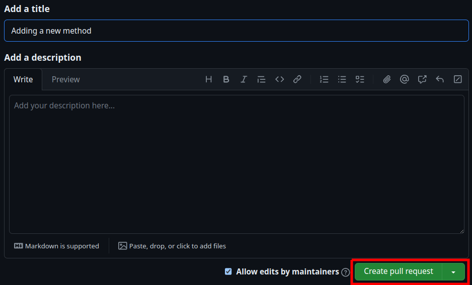

Benchmarking signal detection and denoising methods in the time-frequency plane¶
Published benchmarks¶
Task |
Description |
Link |
|---|---|---|
Signal Detection |
Detection of signals in white Gaussian noise |
|
Signal Denoising |
Denoising of synthetic multi-component signals with several time-frequency configurations. |
Relevant Files¶
The folder notebooks holds a number Python notebooks with minimal working examples of the methods used in the paper (in Python).
Additionally, the directory src/methods contains several folders where minimal working examples of the Matlab implemented methods can be found, each one named after their corresponding method (files mwe_*.m).
Index¶
Benchmarking a new method¶
You can use the code in this repository to test a new method against others, which is based on the freely-available, Python-based, benchmarking toolbox introduced here. Clone this repository and benchmark your own method locally, i.e. in your computer. This will allow you to run the benchmarks with all the modifications you want (exploring different parameters, type of signals, number of repetitions, etc.).
The notebooks folder contains a number of minimal working examples to understand how this benchmark works and how you could use it for your project. In particular, demo_benchmark.ipynb gives two minimal working examples to introduce the basic functionality of the Benchmark class, and the notebook demo_signal_bank.ipynb showcases the signals produced by the SignalBank class.
The instructions below will help you to add a new method and run the benchmark afterwards.
First you should have a local copy of this repository to add and modify files. Open a terminal in a directory of your preference and use
git clone https://github.com/jmiramont/benchmarks-detection-denoising
Installation using poetry¶
We use poetry, a tool for dependency management and packaging in python to install the benchmarking framework. You can install poetry following the steps described here.
Then, make poetry create a virtual environment and install the main dependencies of the benchmarks using:
poetry install --only main
Benchmarking Matlab-implemented methods is possible thanks to the incorporated Matlab’s Python engine, that allows communication between python and a Matlab’s session. This module’s version must be compatible with your local Matlab installation, please modify the dependencies for this package accordingly. Additionally, Matlab’s Python engine is only compatible with certain Python versions, depending on the local Matlab installation you are running. Check that your versions of matlab and Python are compatible.
Remark for conda users:
If you have Anaconda or Miniconda installed please disable the auto-activation of the base environment and your conda environment using:
conda config --set auto_activate_base false
conda deactivate
You can now add your new method. You can run the benchmarks for only new added approaches. However, if you want to reproduce the current results, you will need extra dependencies.
Adding a new method to benchmark¶
Whether your method is implemented in Python or Matlab, you must create a new .py file the name of which must start with method_ and have certain content to be automatically discovered by the toolbox. The purpose of this file is to encapsulate your method in a new class. This is much easier than it sounds :). To make it simpler, a file called method_new_basic_template.py is made available (for Python users) which you can use as a template. You just have to fill in the parts that implement your method. Matlab users can also find a template here.
A new method can then be tested against others by adding this file into the folder src/methods. We shall see how to do this using a template file in the following sections.
Python-based methods¶
First, the function implementing your method must have the following signature if you’re working in python:
def a_new_method(signal, *args, **kwargs):
...
Methods should receive an (N,) numpy array representing a discrete-time signal, where and N is the number of time samples. Additionally, they should receive a variable number of input arguments to allow testing different combinations of input parameters. The ouput of the function must be a numpy array of predefined dimensions according to the task.
In the first section of the template file method_new_basic_template.py, you can import a function with your method or implement everything in the same file:
""" First section ----------------------------------------------------------------------
| Import here all the modules you need.
| Remark: Make sure that neither of those modules starts with "method_".
"""
from mcsm_benchs.benchmark_utils import MethodTemplate
The second section of the file should include all the functions your method needs to work. This functions could also be defined in a separate module imported in the previous section as well.
""" Second section ---------------------------------------------------------------------
| Put here all the functions that your method uses.
|
| def a_function_of_my_method(signal, *args, **kwargs):
| ...
"""
In the third and final section, your method is encapsulated in a new class called NewMethod (you can change this name if you prefer to, but it is not strictly necessary). The only requisite for the class that represents your method is that it inherits from the abstract class MethodTemplate. This simply means that you will have to implement the class constructor and a class function called -unsurprisingly- method():
""" Third section ----------------------------------------------------------------------
| Create here a new class that will encapsulate your method.
| This class should inherit the abstract class MethodTemplate.
| You must then implement the class function:
def method(self, signal, params)
...
| which should receive the signals and any parameters that you desire to pass to your
| method.
"""
class NewMethod(MethodTemplate):
def __init__(self):
self.id = 'a_new_method'
self.task = 'denoising' # Should be either 'denoising' or 'detection'
def method(self, signals, params = None): # Implement this method.
...
# def get_parameters(self): # Use it to parametrize your method.
# return [None,]
The constructor function __init__(self) must initialize the attributes self.id and self.task. The first is a string to identify your method in the benchmark. The second is the name of the task your method is devoted to.
Lastly, you have to implement the class function method(self, signals, *args, **kwargs). This function may act as a wrapper of your method, i.e. you implement your method elsewhere and call it from this function passing all the parameters in the process, or you could implement it directly here.
If you want to test your method using different sets of parameters, you can also implement the function get_parameters() to return a list with the desired input parameters (you can find an example of this here).
Finally, you have to move the file with all the modifications to the folder /src/methods. Changing the name of the file is possible, but keep in mind that the file’s name must start with “method_” to be recognizable.
Matlab-based method¶
The Matlab function implementing your method must have a particular signature. For example, for a method with two input parameters should be:
function [X] = a_matlab_method(signal, param_1, param_2)
Your method can have all the (positional) input arguments you need. The ouput of the function must be a Matlab matrix of predefined dimensions according to the task.
We now can see how to benchmark a method implemented in Matlab. A template file is given here for interested users.
In the first section of the file, the class MatlabInterface is imported, which will simply act as an interface between Python and a Matlab session where your method will be run:
from mcsm_benchs.benchmark_utils import MethodTemplate
from mcsm_benchs.MatlabInterface import MatlabInterface
# You must import the MethodTemplate abstract class and the MatlabInterface class.
Then, you must move the .m file with your method to the folder src\methods. A convenient and neat way of doing this is by creating a folder with all the .m files related to your method, for example called a_matlab_method_utils. After this you can now create a MatlabInterface instance that represents your method, by passing a string to the MatlabInterface creator with the name of the previously defined function. For example:
# After moving a file called 'a_matlab_method.m' to src\methods, create an interface with the Matlab's Python engine by passing the name of the file (without the .m extension). Then get the matlab function as:
mlint = MatlabInterface('a_matlab_method')
matlab_function = mlint.matlab_function # A python function handler to the method.
# Paths to additional code for the method to add to Matlab path variable.
paths = [
'src\methods\a_matlab_method_utils',
'..\src\methods\a_matlab_method_utils'
]
The last lines make sure that if you created a new folder named new_method_utils inside src\methods with the files related to your Matlab-implemented approach, these are available to the Matlab session.
Now we are ready to complete the third section of the file. This can be used exactly as it is in the template file, provided you have done all the precedent steps.
class NewMethod(MethodTemplate):
def __init__(self):
self.id = 'a_matlab_method'
self.task = 'denoising'
def method(self, signal, *params):
""" A class method encapsulating a matlab function.
Args:
signals (numpy array): A signal.
params: Any number of positional parameters.
"""
signal_output = matlab_function(signal, *params) # Only positional args.
return signal_output
The constructor function __init__(self) must initialize the attributes self.id and self.task. The first is a string to identify your method in the benchmark. The second is the name of the task your method is devoted to.
Remark: The MatlabInterface class will cast the input parameters in the appropriate Matlab types.
Remark 2: A Matlab method must comply with the output parameters shapes expected by the toolbox. Matlab vectors of double type numbers will be cast into numpy arrays of floats, and Matlab’s boolean types will be cast into python booleans. If your method returns more than one parameter, only the first one returned is taken.
Running the benchmark with new methods¶
Once the new methods are added, you can run a benchmark by executing the files run_this_benchmark_*.py located in the repository.
You can do this using the local environment created with poetry by running:
poetry run python run_this_benchmark_denoising.py
This will run the benchmark using new added methods, avoiding previously explored ones and saving time. You can change this from the configuration files as explained in the next section.
Changing the benchmark configuration¶
The benchmark parameters can be modified using the files config_denoising.yaml and config_detection.yaml located in the repository.
Each line of this file define an input parameter of the benchmark:
N: 1024 # Number of time samples
SNRin: [-20,-10,0,10,20] # Values of SNR to evaluate.
repetitions: 30 #
parallelize: 4 # If False, run the benchmark in a serialized way. If True or int, runs the benchmark in parallel with the indicated number of cores.
verbosity: 4 # Controls the messages appearing in the console.
using_signals: [
'McDampedCos',
'McCrossingChirps',
'McSyntheticMixture5',
]
add_new_methods: True # Run again the same benchmark but with new methods:
Adding dependencies¶
Your method might need particular modules as dependencies that are not currently listed in the dependencies of the default benchmark. You can add all your dependencies by modifying the .toml file in the folder, under the [tool.poetry.dependencies] section. For example:
[tool.poetry.dependencies]
python = ">=3.8,<3.11"
numpy = "^1.22.0"
matplotlib = "^3.5.1"
pandas = "^1.3.5"
A more convenient and interactive way to do this interactively is by using poetry, for example:
poetry add numpy
and following the instructions prompted in the console.
Afer this, run
poetry update
to update the .lock file in the folder.
Adding your own method to the online benchmark¶
For this, fork this repository, for example by using the “Fork” button above:

This will create a copy of the repository in your own GitHub account, the URL of which should look like
https://github.com/YOUR-USERNAME/benchmarks-detection-denoising
Now, let’s create a local copy, i.e. in your computer, of the repository you have just forked. Open a terminal in a directory of your preference and use
git clone https://github.com/YOUR-USERNAME/benchmarks-detection-denoising
When a repository is forked, a copy of all the branches existing in the original one are also created. It would be better if you create a new branch to work in your own changes, mainly adding your new method to be tested. For this, create a new branch using:
git branch new_method
git checkout new_method
Now you can follow the instructions to add your method to the benchmark, in this case in a local copy of this repository, in order to be able to add and modify files.
After this, you can get your approach added to the benchmark via a Pull Request. First, you need to update the remote version of your fork, now that you have added your new method and tested that it is working with pytest. To do this, commit the changes and then push them to your remote repository:
git commit --all -m "Uploading a new method"
git push origin new_method
Now you can create a new pull request by using the “Contribute” button from the fork created before:
and then “Open a Pull Request”. There you will need to select the branch where your changes are going to be made in the original repository of the benchmark.
Please choose here `new_methods``:

Finally, send the pull request by clicking on “Create pull request”:

You can add an short comment in the “Write” field.
An explanation of the new method and related references (notes, articles, etc.) will be appreciated.
Modify matlabengine module version¶
Check the version of the matlabengine module you have to install to use run the benchmarks in the next table:
Matlab Version |
Python Version |
|
|
|---|---|---|---|
2022b |
3.8, 3.9, 3.10 |
9.13.6 |
|
2022a |
3.8, 3.9 |
9.12.17 |
|
2021b |
3.7, 3.8, 3.9 |
9.11.19 |
Then, look for the matlabengine line in pyproject.toml, it should look like this:
matlabengine = "9.12.17"
Make sure to change the version with the one corresponding to your Python and Matlab current versions. If you have an older version of Matlab or Python, you can search for the correct version of the matlabengine module here.
Afer this, run
poetry update
Size of outputs according to the task¶
The shape and type of the output depends on the task.
For Signal Denoising: The output must be a vector array with the same length as the signal.
For Signal Detection: The output of the method must be a boolean variable indicating if a signal has been detected (true) or not (false).
Reproducing current benchmarks¶
Re-run Detection Benchmark¶
The detection tests used in this benchmark are based on R’s spatstat and GET packages and Python’s spatstat-interface. If you want to rerun the tests, you should have R installed in your system and run:
poetry install --with rtools
Re-run Denoising Benchmarks¶
Similarly, some denoising methods used in this benchmark are implemented in Matlab. You must have a recent Matlab installation in order to run the benchmark from scratch including these methods and run:
poetry install --with matlab_tools
If you want to run all benchmarks, use:
poetry install --with "rtools, matlab_tools"